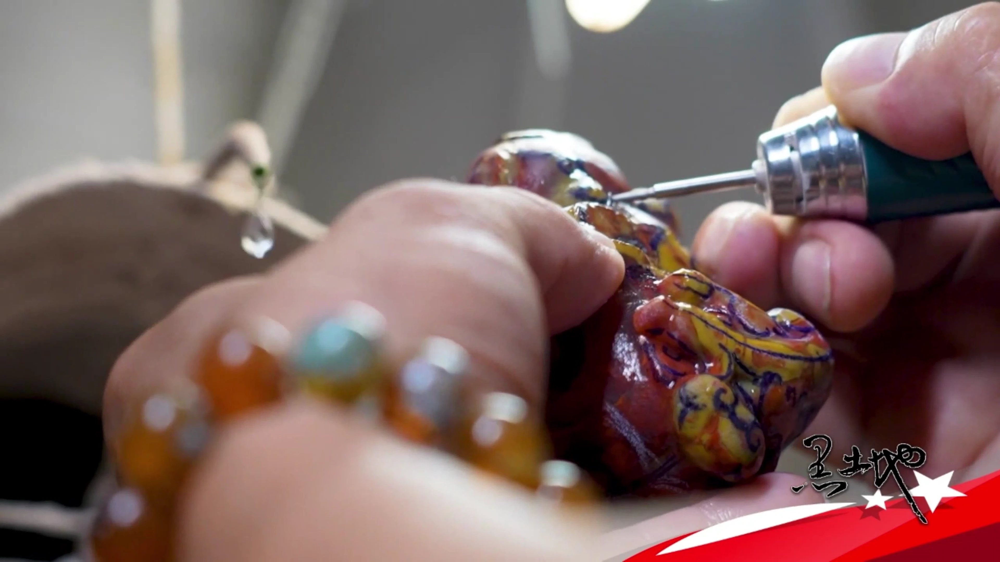
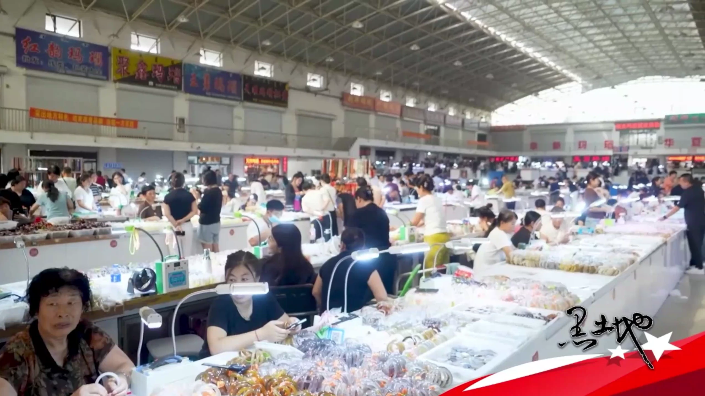
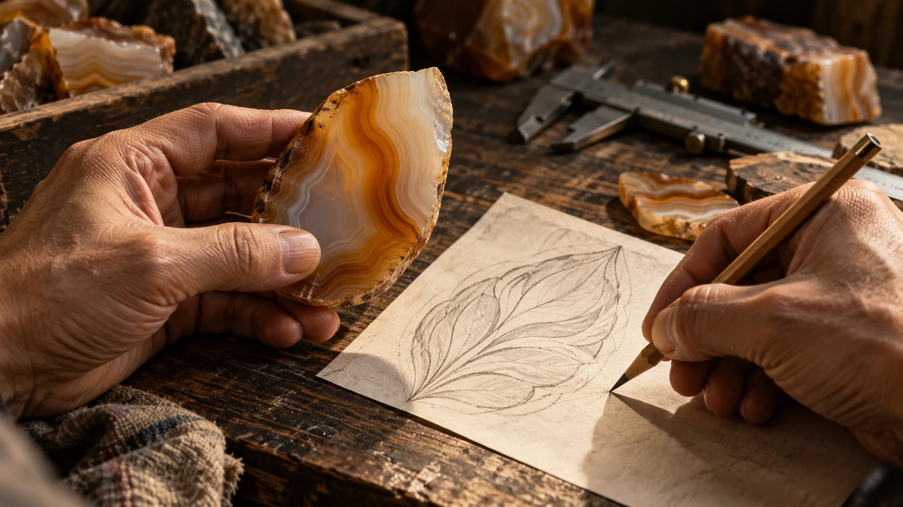

FUXIN · THE ART WITHIN THE STONE
辽宁 · 阜新 / 国家级非遗 · 阜新玛瑙雕石里有境
从一枚玛瑙，走进阜新
看天然纹色，读雕琢匠心，循手艺入乡。
让一次看见，成为你的第一次创作。
READ THE STONE / 从观纹开始
石有天然之色，
你有自己的构思。
转动一块数字原石，看看光如何走过层纹。
再带着这份好奇，读懂手艺，亲手成器。
PROCEDURAL MATERIAL STUDY
THE REAL STONES / 实物观赏
从天然纹理，到成器之美。
把目光从数字创作移向真实的石头。
看一片层纹、一枚佩饰，也看手艺如何让石成器。
石有天然之色，
人有成器之心。
玛瑙天然的色彩与条带，为创作留下不同可能。阜新玛瑙雕入选第一批国家级非物质文化遗产代表性项目名录。这里从观察、构图与工艺理解出发，让更多人走近这门手艺。阅读项目资料 ↗
THE DIGITAL ATELIER / 亲手成器
把一块纹色，做成自己的作品。

FOLLOW THE CRAFT · MEET THE COUNTRYSIDE
辽宁 · 阜新蒙古族自治县 · 十家子镇循一抹石色，
赴一程乡情。
从一块玛瑙的纹理出发，
去认识一双手、一座小镇，与手艺相连的生活。
01 / EXPLORE THE TOWN
把小镇，慢慢展开。
文化、手艺、市集、水岸与古迹。
点击一个节点，找到你想停下来的理由。
02 / READ THE MAKER'S EYE
看一双手，如何读懂一块石。
在操作之前，先学会观察。
把现场想问的问题，带进自己的研学手册。

AI 手艺情境 · 非特定传承人或工坊实拍按学习逻辑组织的观察环节，现场工序随作品与技法调整。工艺资料 ↗
03 / A JOURNEY OF YOUR OWN
这一次，按自己的节奏走。
从一个行程灵感开始，增减节点、调整顺序。
把路线与问题，收成一张可带走的手册。
时长为自行安排的现场停留建议，不含交通、用餐与等候。实际开放与接待需向当地确认。
04 / PREPARE TO DISCOVER
带着发现，出发。
完成四项线上准备，留下一本自己的研学手册。
这里记录学习与计划，线下的故事等你亲自续写。
入乡之前，
先让好奇有方向。
线上准备记录 · 非实地到访认证
A LITTLE CRAFT KNOWLEDGE
也可以先回到数字工坊，把今天看到的纹色与灵感留在作品里。
YOUR COLLECTION / 我的作品
留住这一刻的构思。
作品保存在当前浏览器，可导出设计方案卡与参数。上传照片和自定义色区不随收藏持久化；导出方案卡可保留当前画面。
我的研学意向
本地规划记录，用于整理兴趣；尚未向任何经营者提交预约。